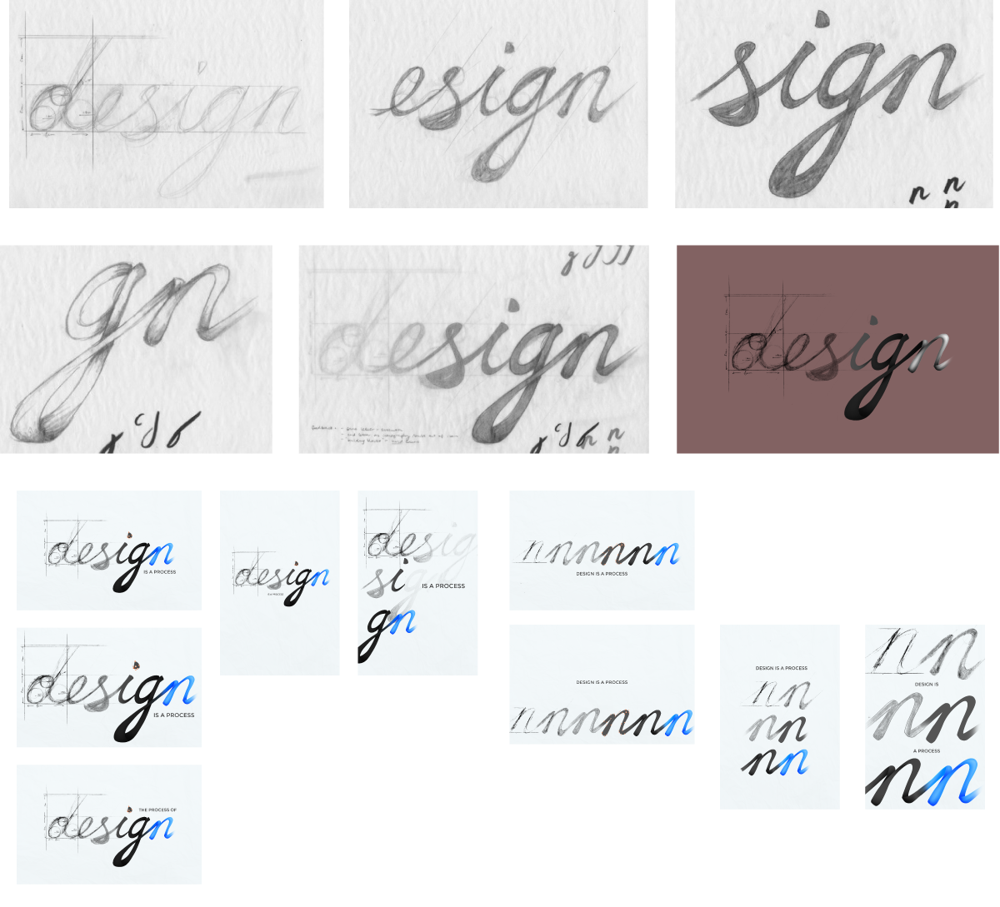
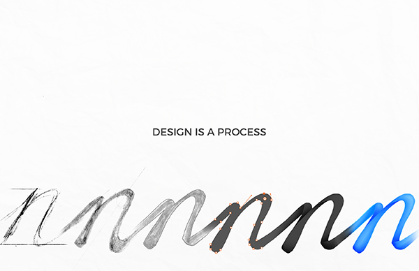

Design Is
Client
School ProjectRole
Poster & Graphic DesignBrief
How would you visualise the definition of design?
This project is a visual definition of the definition of design (on my terms). Designed for my Elements II course, I chose process because of the intricacies of design - the process is just as important as the result. As such, I chose to combine both digital and traditional media to drive home that exact point.
{kind=link}
Process
Because traditional media was used, I wanted to really mimic the process of perfecting an initially hand-lettered phrase. I had layers of tracing paper laid down, with each layer building upon the next. These were scanned and cleaned up in Photoshop, in which I created the vector handle graphics and used a tablet to help in shading the final two letters.
{kind=link}
Alternative Design
I had an alternative solution, where the process of one character was tracked, specifically the letter 'n'. This way, there would be an evolution of the process.
{kind=link}
Fin
In order to highlight the definition, I decided to show it, quite literally. In doing so, I was able to learn a lot about all facets of the process behind a design.